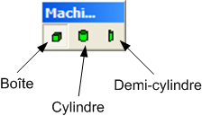

Table des matières

La barre d'outils Machine est uniquement active lorsque un modeleur de machine est actif.
Cet outils permet de dessiner un parallélépipède.
Cet outils permet de dessiner un cylindre.
Cet outils permet de dessiner un demi-cylindre.